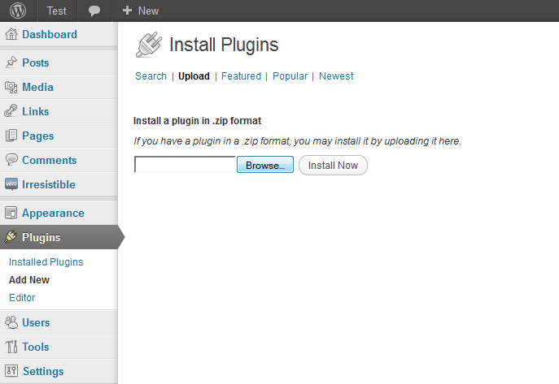
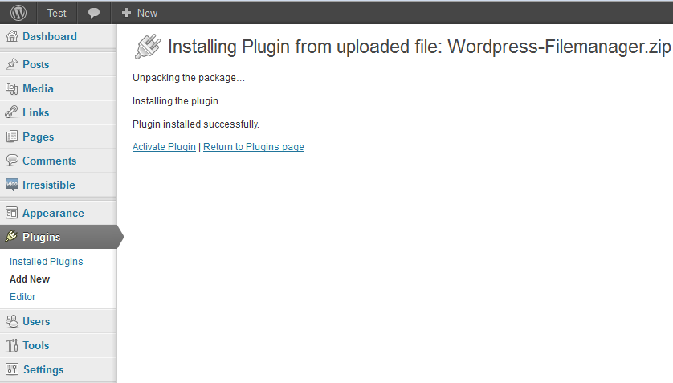

HTML To Wordpress Converter installs like any wordpress plugin, Extract the download file from the codecanyon and extract it. There is a documentation folder and plugin, upload the plugin to wordpress to install it:
Go to your WordPress admin panel, click plugins on the left side menu and choose upload:

Choose the Plugin and activate it:

Thats it :)
To make your html file ready for proper conversion, you need to specify sections in your html file:
Header Section:
For header section you need to wrap your header section in <header> and </header> eg:
<header> <body> <div id="templatemo_container"> <div id="templatemo_banner"> <div id="logo"></div> <img src="xczxcxczxc/czxczc" class="wp_logo"/> <search> <div id="search_section"> <form action="#" method="get"> <input type="text" value="Enter keyword here..." name="q" size="10" id="searchfield" title="searchfield" onfocus="clearText(this)" onblur="clearText(this)" /> <input type="submit" name="Search" value="Search" alt="Search" id="searchbutton" title="Search" /> </form> </div> </search> </div> <menu id="mymenu" name="My Menu"> <div id="templatemo_menu"> <ul> <li><a href="#" class="current"><span></span>Home</a></li> <li><a href="#"><span></span>Gallery</a></li> <li><a href="#"><span></span>Blog</a></li> <li><a href="#"><span></span>Forum</a></li> <li><a href="#"><span></span>About Us</a></li> <li><a href="#"><span></span>Contact Us</a></li> </ul> </div> </menu> </header>
Menu:
To make a menu you need to use <menu> and </menu> tags surrounding your menu div containing the ul, eg:
<menu id="mymenu" name="My Menu"> <div id="templatemo_menu"> <ul> <li><a href="#" class="current"><span></span>Home</a></li> <li><a href="#"><span></span>Gallery</a></li> <li><a href="#"><span></span>Blog</a></li> <li><a href="#"><span></span>Forum</a></li> <li><a href="#"><span></span>About Us</a></li> <li><a href="#"><span></span>Contact Us</a></li> </ul> </div> <!-- end of menu --> </menu>
name is your menu name that is added to your wordpress backend, id is the unique id for the menu, it has to be different for each menu in your theme.
Widget:
To make a widget you need to wrap your widget html with <widget></widget>, here is an example:
<widget id="right-sidebar" name="Right Hand Sidebar" description="Widgets in this area will be shown on the right-hand side."></widget>
id is the unique id for each widget, name is the name shown in the widget menu and description is the description for that widget. If the widget is empty from the backend, it will show the default html as above. Otherwise it will replace the html.
Blog Content:
<blogcontent></blogcontent> will wrap the main content of the page, its the place where your post goes. You can also use <blogtitle></blogtitle> for the the post name. eg:
<h3><blogtitle></blogtitle></h3> <p> <blogcontent> </blogcontent> </p>
The above snippet will put your post title inside h3 tags and the post content inside p tags right below it.
Footer:
Footer section is enclosed by <footer></footer> tags, eg:
<footer> <div id="templatemo_footer"> <ul class="footer_list"> <li><a href="#" class="current">Home</a></li> <li><a href="#">Gallery</a></li> <li><a href="#">Blog</a></li> <li><a href="#">Forum</a></li> <li><a href="#">About Us</a></li> <li class="last"><a href="#">Contact Us</a></li> </ul> </footer>
Logo:
For logo, you just need to add the class "wp_logo" to your logo img, eg:
<img src="images/logo.png" class="wp_logo"/>
This will also add an option in the backend that allows you to change the logo url.
Index.html template is the main.php for Wordpress which is the default template, all other html files will be converted to templates, each file name is the template name.
Lets take an exmple:
If you have a theme with a couple of html files, like:
index.html,
portfolio.html,
blog.html,
about.html.
The index.html file will be the main template file (main.php) and all other html files will be page templates with these names:
portfolio
blog
about.
Convert your HTML documents into WordPress themes without having any knowledge of the WordPress theming standards.
Features:
This products uses SimpleHTMLDOM library:
http://simplehtmldom.sourceforge.net/
SimpleHTMLDOM License:
Website: http://sourceforge.net/projects/simplehtmldom/
Additional projects that may be used: http://sourceforge.net/projects/debugobject/
Acknowledge: Jose Solorzano (https://sourceforge.net/projects/php-html/)
Contributions by:
Yousuke Kumakura (Attribute filters)
Vadim Voituk (Negative indexes supports of "find" method)
Antcs (Constructor with automatically load contents either text or file/url)
all affected sections have comments starting with "PaperG"
Paperg - Added case insensitive testing of the value of the selector.
Paperg - Added tag_start for the starting index of tags - NOTE: This works but not accurately.
This tag_start gets counted AFTER \r\n have been crushed out, and after the remove_noice calls so it will not reflect the REAL position of the tag in the source,
it will almost always be smaller by some amount.
We use this to determine how far into the file the tag in question is. This "percentage will never be accurate as the $dom->size is the "real" number of bytes the dom was created from.
but for most purposes, it's a really good estimation.
Paperg - Added the forceTagsClosed to the dom constructor. Forcing tags closed is great for malformed html, but it CAN lead to parsing errors.
Allow the user to tell us how much they trust the html.
Paperg add the text and plaintext to the selectors for the find syntax. plaintext implies text in the innertext of a node. text implies that the tag is a text node.
This allows for us to find tags based on the text they contain.
Create find_ancestor_tag to see if a tag is - at any level - inside of another specific tag.
Paperg: added parse_charset so that we know about the character set of the source document.
NOTE: If the user's system has a routine called get_last_retrieve_url_contents_content_type availalbe, we will assume it's returning the content-type header from the
last transfer or curl_exec, and we will parse that and use it in preference to any other method of charset detection.
Found infinite loop in the case of broken html in restore_noise. Rewrote to protect from that.
PaperG (John Schlick) Added get_display_size for "IMG" tags.
Licensed under The MIT License
Redistributions of files must retain the above copyright notice.